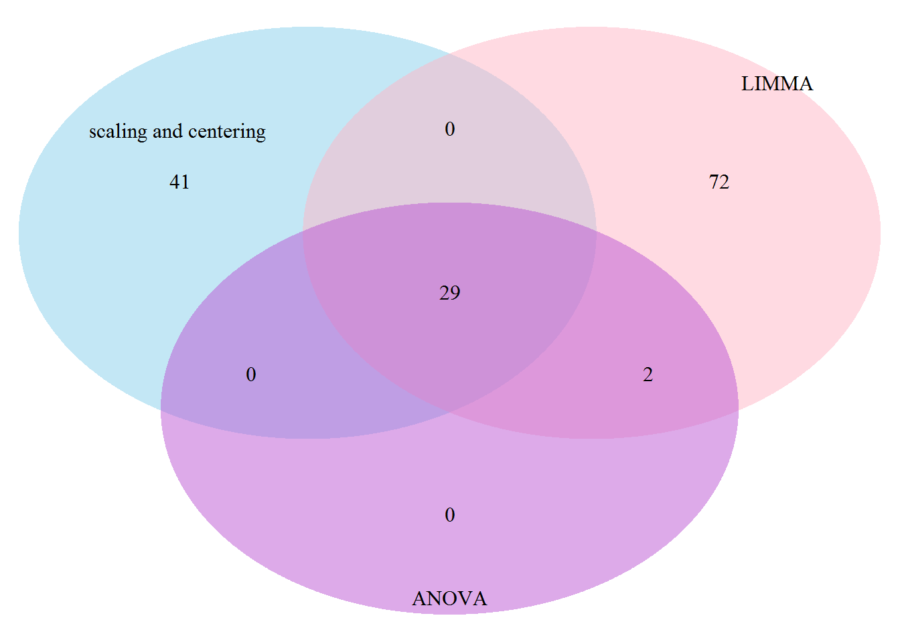

5 Comparison of the differents statistical test
resSCL <- readRDS("resSCL.rds")
resLIMMA <- readRDS("resLIMMA.rds")
resANOVA <- readRDS("resANOVA.rds")setdiff(resANOVA,resSCL)## [1] "sp|P01859|IGHG2_HUMAN" "sp|P06311|KV311_HUMAN"print("")## [1] ""setdiff(resLIMMA, resANOVA)## [1] "sp|P02790|HEMO_HUMAN" "sp|P01023|A2MG_HUMAN"
## [3] "sp|P02649|APOE_HUMAN" "sp|Q06033|ITIH3_HUMAN"
## [5] "sp|P07225|PROS_HUMAN" "sp|P05546|HEP2_HUMAN"
## [7] "sp|P33151|CADH5_HUMAN" "sp|P00747|PLMN_HUMAN"
## [9] "sp|P10643|CO7_HUMAN" "sp|P27169|PON1_HUMAN"
## [11] "sp|P10909|CLUS_HUMAN" "sp|P07360|CO8G_HUMAN"
## [13] "sp|P35858|ALS_HUMAN" "sp|Q96IY4|CBPB2_HUMAN"
## [15] "sp|P07358|CO8B_HUMAN" "sp|P02675|FIBB_HUMAN"
## [17] "sp|P60709|ACTB_HUMAN" "sp|P03952|KLKB1_HUMAN"
## [19] "sp|P01019|ANGT_HUMAN" "sp|P19652|A1AG2_HUMAN"
## [21] "sp|P02748|CO9_HUMAN" "sp|P02743|SAMP_HUMAN"
## [23] "sp|P00739|HPTR_HUMAN" "sp|P51884|LUM_HUMAN"
## [25] "sp|P02652|APOA2_HUMAN" "sp|P04217|A1BG_HUMAN"
## [27] "sp|P18428|LBP_HUMAN" "sp|P02765|FETUA_HUMAN"
## [29] "sp|P08697|A2AP_HUMAN" "sp|P01857|IGHG1_HUMAN"
## [31] "sp|P05543|THBG_HUMAN" "sp|P00450|CERU_HUMAN"
## [33] "sp|P07996|TSP1_HUMAN" "sp|P02655|APOC2_HUMAN"
## [35] "sp|P23142|FBLN1_HUMAN" "sp|P01880|IGHD_HUMAN"
## [37] "sp|P01860|IGHG3_HUMAN" "sp|P0CG06|LAC3_HUMAN"
## [39] "sp|P01008|ANT3_HUMAN" "sp|P01031|CO5_HUMAN"
## [41] "sp|Q96PD5|PGRP2_HUMAN" "sp|P01042|KNG1_HUMAN"
## [43] "sp|B9A064|IGLL5_HUMAN" "sp|P02671|FIBA_HUMAN"
## [45] "sp|P02679|FIBG_HUMAN" "sp|P01609|KV117_HUMAN"
## [47] "sp|P06309|KV205_HUMAN" "sp|P00734|THRB_HUMAN"
## [49] "sp|P05155|IC1_HUMAN" "sp|P02647|APOA1_HUMAN"
## [51] "sp|P02775|CXCL7_HUMAN" "sp|P01611|KV119_HUMAN"
## [53] "sp|P06331|HV209_HUMAN" "sp|P04208|LV106_HUMAN"
## [55] "sp|P04114|APOB_HUMAN" "sp|P01602|KV110_HUMAN"
## [57] "sp|P08185|CBG_HUMAN" "sp|P02751|FINC_HUMAN"
## [59] "sp|P06727|APOA4_HUMAN" "sp|O95445|APOM_HUMAN"
## [61] "sp|P06314|KV404_HUMAN" "sp|O75636|FCN3_HUMAN"
## [63] "sp|P04433|KV309_HUMAN" "sp|P0DJI8|SAA1_HUMAN"
## [65] "sp|Q14624|ITIH4_HUMAN" "sp|P00751|CFAB_HUMAN"
## [67] "sp|P02750|A2GL_HUMAN" "sp|P13671|CO6_HUMAN"
## [69] "sp|P22792|CPN2_HUMAN" "sp|P02763|A1AG1_HUMAN"
## [71] "sp|P01009|A1AT_HUMAN" "sp|P02656|APOC3_HUMAN"library(VennDiagram)
grid.newpage()
draw.triple.venn(area1 = length(resSCL),
area2 = length(resLIMMA),
area3 = length(resANOVA),
n12 = length(intersect(resSCL,resLIMMA)),
n23 = length(intersect(resLIMMA,resANOVA)),
n13 = length(intersect(resSCL,resANOVA)),
n123 = length(Reduce(intersect, list(resSCL,resLIMMA,resANOVA))),
category = c("scaling and centering", "LIMMA", "ANOVA"),
cat.dist = c(-0.06, 0, -0.01),
lty = "blank", fill = c("skyblue", "pink1", "mediumorchid"))
## (polygon[GRID.polygon.1724], polygon[GRID.polygon.1725], polygon[GRID.polygon.1726], polygon[GRID.polygon.1727], polygon[GRID.polygon.1728], polygon[GRID.polygon.1729], text[GRID.text.1730], text[GRID.text.1731], text[GRID.text.1732], text[GRID.text.1733], text[GRID.text.1734], text[GRID.text.1735], text[GRID.text.1736], text[GRID.text.1737], text[GRID.text.1738], text[GRID.text.1739])